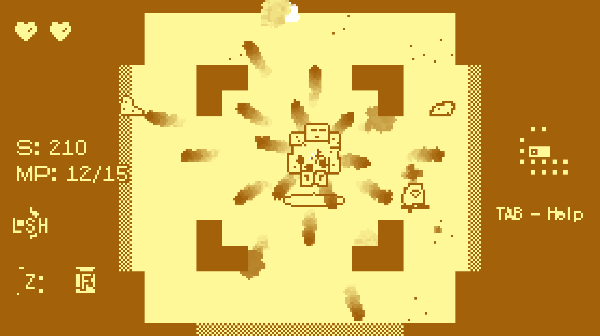
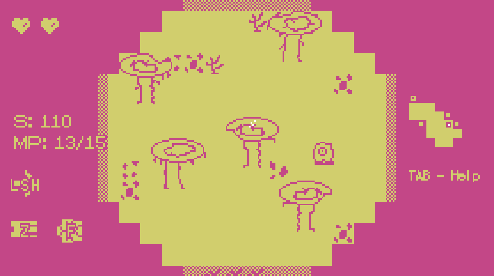

TETRON
An action roguelite

An action roguelite
Tetron is an atmospheric top down twin stick roguelite about seeking revenge as the last of the mysterious race of “Tetrons.”
I made the entire game myself using Gamemaker Studio 2 as the engine, BFXR for sound effects, and Logic Pro for music and other sound design. The game has 3 areas with distinct procedural levels, over 20 enemies, 6 minibosses, and 3 bosses all with unique attack patterns and AI.
The game also has a unique perk system, and a unique and challenging mana economy as mana is used both for special abilities and gaining access to new items and areas in the world. I also created a custom, dynamic music system to highlight pacing changes in game. If you want a free copy for business reasons, feel free to reach out to me through my email below.
